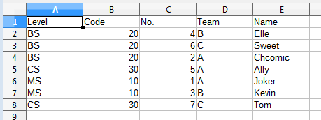
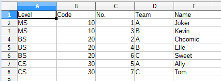
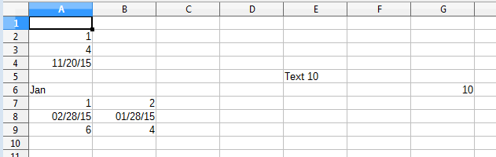
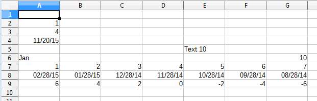
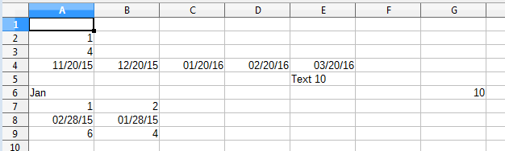

Chapter 24. Complex Data Manipulation¶
Topics
Sorting Data; Generating Data: Automatic, LINEAR Mode, DATE Mode, GROWTH Mode; Fancy Text: borders, headlines, hyperlinks, annotations
Example folders: "Calc Tests" and "Utils"
This chapter looks at a variety of less common text manipulation techniques, including the sorting of data, generating data based on examples, and the use of borders, headlines, hyperlinks, and annotations in cells.
1. Sorting Data¶
Sorting is available through SheetCellRange's XSortable interface. There are four basic steps required for sorting a block of cells:
1. Obtain an XSortable interface for the cell range;¶
2. Specify the sorting criteria as a TableSortField array;¶
3. Create a sort descriptor;¶
4. Execute the sort.¶
These steps are illustrated by the DataSort.java example, which begins by building a small table:
// in DataSort.java public static void main(String args[]) { XComponentLoader loader = Lo.loadOffice(); XSpreadsheetDocument doc = Calc.createDoc(loader); if (doc == null) { System.out.println("Document creation failed"); Lo.closeOffice(); return; } GUI.setVisible(doc, true); XSpreadsheet sheet = Calc.getSheet(doc, 0);
// create a table that needs sorting
Object[][] vals = {
{ "Level", "Code", "No.", "Team", "Name" },
{ "BS", 20, 4, "B", "Elle" },
{ "BS", 20, 6, "C", "Sweet" },
{ "BS", 20, 2, "A", "Chcomic" },
{ "CS", 30, 5, "A", "Ally" },
{ "MS", 10, 1, "A", "Joker" },
{ "MS", 10, 3, "B", "Kevin" },
{ "CS", 30, 7, "C", "Tom" } };
Calc.setArray(sheet, "A1:E8", vals); // or just "A1"
: // sorting code; explained below
Lo.saveDoc(doc, "dataSort.ods"); Lo.waitEnter(); Lo.closeDoc(doc); Lo.closeOffice();
} // end of main()
The unsorted table is shown in Figure 1.

Figure 1. An Unsorted Table.
The table is sorted so that its rows are in ascending order depending on their "Code" column values. When two rows have the same code number then the sort uses the "No." column. Figure 2 shows the result of applying these two sorting criteria:

Figure 2. The Sorted Table, Using Two Sort Criteria.
The four sorting steps mentioned above are implemented like so:
// in DataSort.java : // 1. obtain an XSortable interface for the cell range XCellRange sourceRange = Calc.getCellRange(sheet, "A1:E8"); XSortable xSort = Lo.qi(XSortable.class, sourceRange);
// 2. specify the two sorting criteria as a TableSortField array TableSortField[] sortFields = new TableSortField[2]; sortFields[0] = makeSortAsc(1, true); // sort by "B" col sortFields[1] = makeSortAsc(2, true); // then sort by "C" col
// 3. define a sort descriptor
PropertyValue[] props = Props.makeProps("SortFields", sortFields,
"ContainsHeader", true);
Lo.wait(2000);
//wait a bit so user can see original table before it's sorted
System.out.println("Sorting...");
xSort.sort(props); // 4. do the sort
:
The "A1:E8" cell range referenced using the XCellRange interface is converted to XSortable. This interface is defined in Office's util module, not in sheet or table, probably because it's also used in text documents for sorting tables. You can find its documentation by calling lodoc xsortable.
The two sorting criteria are represented by two TableSortField objects in an array.
The makeSortAsc() function is defined in DataSort.java as:
// in DataSort.java
private static TableSortField makeSortAsc(int index,
boolean isAscending)
// make a TableSortField object
{ TableSortField sf = new TableSortField();
sf.Field = index;
sf.IsAscending = isAscending; // ascending or descending
sf.IsCaseSensitive = false;
return sf;
} // end of makeSortAsc()
A sort descriptor is an array of PropertyValue objects which affect how XSortable.sort() executes. The most commonly used properties are "SortFields" and "ContainsHeader". "SortFields" is assigned the sorting criteria (i.e. the TableSortField array), and the "ContainsHeader" boolean specifies whether the sort should exclude the first row because it contains header text.
The sort descriptor properties are defined in a number of classes (SortDescriptor2, TableSortDescriptor2, and TextSortDescriptor2), which are most easily accessed from the XSortable documentation page.
2. Generating Data¶
Cell data is generated by supplying numbers to a function which treats them as the initial values in a arithmetic (or geometric) series. The function employs the series to churn out as many more numbers as are needed to fill a given cell range.
A series is created by the XCellSeries interface, which is part of the SheetCellRange service (see Figure 3).

Figure 3. The Cell Range Services.
Several examples of how to use XCellSeries' two methods, fillAuto() and fillSeries(), are contained in the Filler.java example described next.
Filler.java starts by filling a blank sheet with an assortment of data, which will be used by the XCellSeries methods to initialize several series. The original sheet is shown in Figure 4.

Figure 4. The Filler.java Sheet before Data Generation.
The simpler of the two XCellSeries methods, XCellSeries.fillAuto(), requires a cell range, fill direction, and how many cells should be examined as 'seeds'. For example, rows 7, 8, and 9 of Figure 4 are filled using:
- // in fillSeries() in Filler.java
- // store two values in three rows...
// ascending integers: 1, 2
Calc.setVal(sheet, "A7", 1);
Calc.setVal(sheet, "B7", 2);
// dates, decreasing by month Calc.setDate(sheet, "A8", 28, 2, 2015); Calc.setDate(sheet, "B8", 28, 1, 2015);
// descending integers: 6, 4 Calc.setVal(sheet, "A9", 6); Calc.setVal(sheet, "B9", 4);
// get cell range series XCellSeries series = Calc.getCellSeries(sheet, "A7:G9");
// use first 2 cells for series, and fill to the right series.fillAuto(FillDirection.TO_RIGHT, 2);
The supplied cell range (A7:G9) includes the seed values, and the cells to be filled.
It's converted into an XCellSeries interface by Calc.getCellSeries(), which is defined as:
// in the Calc class
public static XCellSeries getCellSeries(XSpreadsheet sheet,
String rangeName)
{ XCellRange cellRange = sheet.getCellRangeByName(rangeName);
return Lo.qi(XCellSeries.class, cellRange);
}
XCellSeries.fillAuto() can be supplied with four possible fill directions (TO_BOTTOM, TO_RIGHT, TO_TOP, and TO_LEFT) which also dictate which cells are examined for seeds. By setting the direction to be TO_RIGHT, seed cells in the left-hand parts of the rows are examined. The numerical argument (2) in the call to fillAuto() shown above specifies how many of those cells will be considered in order to automatically determine the series used for the generated cell values.
Figure 5 shows the result of filling rows 7, 8, and 9.

Figure 5. Row Filling Using XCellSeries.fillAuto().
If XCellSeries.fillAuto() doesn't guess the correct series for the data generation, then XCellSeries.fillSeries() offers finer control over the process. It supports five modes: SIMPLE, LINEAR , GROWTH, DATE, and AUTO.
SIMPLE switches off the series generator, and the seed data is copied unchanged to the other blank cells. AUTO makes Office generate its data series automatically, so performs in the same way as fillAuto(). LINEAR , GROWTH, and DATE give more control to the programmer.
2.1. Using the LINEAR Mode¶
Rows 2 and 3 of the spreadsheet contain the numbers 1 and 4 (see Figure 4). By using the LINEAR mode, a step, and a stopping value, it's possible to specify an arithmetic series. For example:
- // in fillSeries() in Filler.java
- Calc.setVal(sheet, "A2", 1); Calc.setVal(sheet, "A3", 4);
/* Fill 2 rows; the 2nd row is not filled completely since the end value is reached */ series = Calc.getCellSeries(sheet, "A2:E3"); series.fillSeries(FillDirection.TO_RIGHT, FillMode.LINEAR, Calc.NO_DATE, 2, 9); // ignore date mode; step == 2; end at 9
The Calc.NO_DATE argument means that dates are not being generated. The '2' value is the step, and '9' is the maximum. The resulting rows 2 and 3 are shown in Figure 6.

Figure 6. Data Generation Using the LINEAR Mode.
Note that the second row is incomplete since the generated values for those cells (10 and 12) exceeded the stopping value.
If no stopping value is required, then the last argument can be replaced with Calc.MAX_VALUE.
2.2. Using the DATE Mode¶
If XCellSeries.fillSeries() is called using the DATE mode then it's possible to specify whether the day, weekday, month, or year parts of the seed date are changed by the series. For example, the seed date at the start of row 4 (20th Nov. 2015) can be incremented one month at a time with the code:
- // in fillSeries() in Filler.java
- Calc.setDate(sheet, "A4", 20, 11, 2015); // day, month, year
// fill by adding one month to date series = Calc.getCellSeries(sheet, "A4:E4"); series.fillSeries(FillDirection.TO_RIGHT, FillMode.DATE, FillDateMode.FILL_DATE_MONTH, 1, Calc.MAX_VALUE);
The result is shown in Figure 7.

Figure 7. Data Generation Using the DATE Mode.
When the month is incremented past 12, it resets to 1, and the year is incremented.
2.3. Using the GROWTH Mode¶
Whereas the LINEAR mode is for creating arithmetic series (i.e. ones incrementing or decrementing in steps), GROWTH mode is for geometric progressions where the 'step' value is repeatedly multiplied to the seed.
In the following example, the seed in "G6" (10; see Figure 7) is used in a geometric progression using multiples of 2. The series is placed in cells going up the sheet starting from "G6". The code:
// in fillSeries() in Filler.java : Calc.setVal(sheet, "G6", 10);
// Fill from bottom to top with a geometric series (*2) series = Calc.getCellSeries(sheet, "G2:G6"); series.fillSeries(FillDirection.TO_TOP, FillMode.GROWTH, Calc.NO_DATE, 2, Calc.MAX_VALUE);
The resulting sheet is shown in Figure 8.

Figure 8. Data Generation Using the GROWTH Mode.
3. Cells with Fancy Text¶
The CellsText.java example brings together a few techniques for manipulating text in cells, namely the addition of borders, headlines, hyperlinks, and annotations. The sheet ends up looking like Figure 9.

Figure 9. Text manipulation in a Sheet.
3.1. Creating a Border and Headline¶
CellTexts.java draws a decorative border and headline by calling:
// in CellTexts.java Calc.highlightRange(sheet, "A2:C7", "Cells and Cell Ranges");
Calc.highlightRange() adds a light blue border around the specified cell range (A2:C7), and the string argument is added to the top-left cell of the range. It's intended to be a headline, so is drawn in dark blue, and the entire top row is made light blue to match the border. The method is implemented as:
// in the Calc class // some hex values for commonly used colors public static final int DARK_BLUE = 0x003399; public static final int LIGHT_BLUE = 0x99CCFF;
public static void highlightRange(XSpreadsheet sheet,
String rangeName, String headline)
{
Calc.addBorder(sheet, rangeName, LIGHT_BLUE);
// color the headline row
CellRangeAddress addr = Calc.getAddress(sheet, rangeName);
XCellRange headerRange = getCellRange(sheet,
addr.StartColumn, addr.StartRow,
addr.EndColumn, addr.StartRow);
Props.setProperty(headerRange, "CellBackColor", LIGHT_BLUE);
// add headline text to the first cell of the row
XCell firstCell = getCell(headerRange, 0, 0);
// location is relative to range
setVal(firstCell, headline);
// make text dark blue and bold
Props.setProperty(firstCell, "CharColor", DARK_BLUE);
Props.setProperty(firstCell, "CharWeight",
com.sun.star.awt.FontWeight.BOLD);
} // end of highlightRange()
The three-argument addBorder() method calls the four-argument version which was described back in Chapter 22, section 2.3. It passes it a bitwise composition of all the border constants:
// in the Calc class
public static void addBorder(XSpreadsheet sheet,
String rangeName, int color)
{ addBorder(sheet, rangeName,
Calc.LEFT_BORDER | Calc.RIGHT_BORDER |
Calc.TOP_BORDER | Calc.BOTTOM_BORDER, color);
}
The cell range for the top row is extracted from the larger range supplied to Calc.highlightRange(). The easiest way of doing this is to get the address of the larger range as a CellRangeAddress object, and use its row and column positions. The header cell range uses the same row index for its starting and finishing rows:
- // part of Calc.highlightRange()
- CellRangeAddress addr = Calc.getAddress(sheet, rangeName);
XCellRange headerRange = getCellRange(sheet,
addr.StartColumn, addr.StartRow, addr.EndColumn, addr.StartRow); // header row uses same start and end row from addr
Perhaps the most confusing part of Calc.highlightRange() is how the first cell of the header range is referenced: XCell firstCell = getCell(headerRange, 0, 0); This is a somewhat different use of getCell() than previous examples, which have always found a cell within a sheet. For instance: XCell cell = Calc.getCell(sheet, 0, 0); The definition for this version of getCell() is:
// in the Calc class
public static XCell getCell(XCellRange cellRange,
int column, int row)
{ try {
return cellRange.getCellByPosition(column, row);
}
catch (Exception e) {
System.out.println("Could not access cell in at: " +
column + " - " + row);
return null;
}
} // end of getCell()
A position in a cell range (e.g. a (column, row) coordinate) is defined relative to the
cell range. This means that the call:
XCell firstCell = getCell(headerRange, 0, 0);
is requesting the top-left cell in headerRange. Since the headerRange covers A2:C2,
(0, 0) means the "A2" cell.
3.2. Adding Hyperlink Text¶
Figure 9 shows that the "B4" cell contains two paragraphs. The second ends with a hyperlink, which means that if the user control-clicks on the "hypertext" text, then the URL "http://fivedots.coe.psu.ac.th/~ad/jlop/" is opened in the OSes default web browser.
The SheetCell service inherits the Cell service which allows a cell to be manipulated with the XCell or the XText interfaces (see Figure 10).

Figure 10. The SheetCell Services and Interfaces.
Once the cell is converted into XText, many of my Writer support methods can be utilized. For example:
// in CellTexts.java : // Insert two text paragraphs and a hyperlink into the cell XText xText = Lo.qi(XText.class, xCell); // cell text XTextCursor cursor = xText.createTextCursor();
Write.appendPara(cursor, "Text in first line.");
Write.append(cursor, "And a ");
Write.addHyperlink(cursor, "hyperlink",
"http://fivedots.coe.psu.ac.th/~ad/jlop/");
A text cursor is created for the cell, and used to add the two paragraphs and the hyperlink.
Cell formatting is done through its properties. As Figure 10 shows, the SheetCell service inherits the CharacterProperties and ParagraphProperties classes, which contain the properties related to cell text:
// in CellTexts.java : // beautify the cell with big, blue, indented text // properties from CharacterProperties Props.setProperty(xCell, "CharHeight", 20.0); Props.setProperty(xCell, "CharColor", Calc.DARK_BLUE);
// property from ParagraphProperties Props.setProperty(xCell, "ParaLeftMargin", 500);
3.3. Printing the Cell's Text¶
The cell's text is accessed via its XText interface:
// in CellTexts.java private static void printCellText(XCell xCell) { XText xText = Lo.qi(XText.class, xCell); System.out.println("Cell Text: \"" + xText.getString() + "\""); : // more code, explained below }
The call to XText.getString() returns all the text, which is printed as:
Cell Text: "Text in first line.
And a hypertext"
The text can also be examined by moving a text cursor through it: XTextCursor cursor = xText.createTextCursor(); However, I was surprised to discover that this text cursor can not be converted into a sentence or paragraph cursor. Both the following calls return null:
XSentenceCursor sentCursor = Lo.qi(XSentenceCursor.class, cursor); XParagraphCursor paraCursor = Lo.qi(XParagraphCursor.class, cursor);
3.4. Adding an Annotation¶
Cells can be annotated, which causes a little yellow text box to appear near the cell, linked to the cell by an arrow (as in Figure 9). Creating a new annotation is a two-step process: the XSheetAnnotationsSupplier interface is used to access the collection of existing annotations, and a new one is added by supplying the annotation text and the address of the cell where its arrow will point. These steps are performed by the first half of Calc.addAnnotation():
// in the Calc class
public static void addAnnotation(XSpreadsheet sheet,
String cellName, String msg)
{
// get the existing annotations
CellAddress addr = getCellAddress(sheet, cellName);
XSheetAnnotationsSupplier annsSupp =
Lo.qi(XSheetAnnotationsSupplier.class, sheet);
XSheetAnnotations anns = annsSupp.getAnnotations();
anns.insertNew(addr, msg); // add the new annotation
// get a reference to the new annotation
XCell xCell = getCell(sheet, cellName);
XSheetAnnotationAnchor annAnchor =
Lo.qi(XSheetAnnotationAnchor.class, xCell);
XSheetAnnotation ann = annAnchor.getAnnotation();
ann.setIsVisible(true); // make annotation visible } // end of addAnnotation()
Annotation creation doesn't return a reference to the new annotation object. For that it's necessary to examine the cell pointed to by the annotation. XCell is converted into a XSheetAnnotationAnchor, which has a getAnnotation() method for returning the annotation (if one exists).
XSheetAnnotation has several methods for obtaining information about the position, author, and modification date of the annotation. setIsVisible() allows its visibility to be switched on and off.